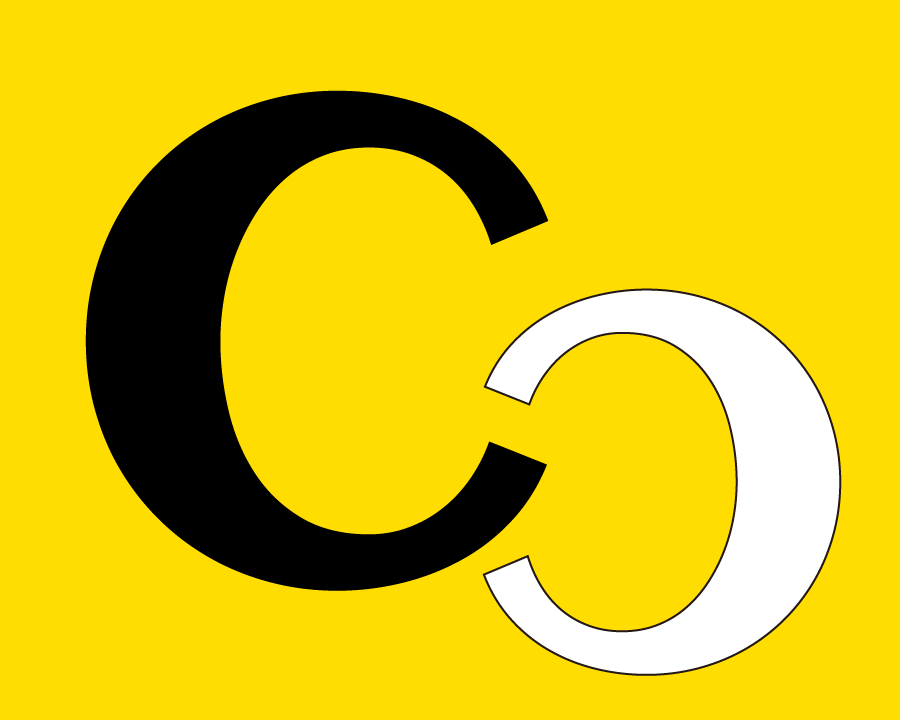

キャリココ｜20代キャリア現在地診断
このまま働いて、
後悔しない？
転職するか、残るか、学ぶか。決めきれない理由を、まずは5問で整理してみてください。
1/5
あなたのキャリア現在地
今のモヤモヤだけで、将来が決まるわけではありません。
選び方と積む経験を変えれば、キャリアはここから作れます。
転職するかどうかは、今すぐ決めなくて大丈夫です。
まずは、あなたに残っている選択肢を一緒に整理しましょう。
求人を見る前に、スクールに入る前に、まずは今の現在地を一緒に整理しましょう。キャリココ公式LINEでは、あなたの状況に合わせて、次に積むべき経験とキャリアの方向性を一緒に考えます。
LINEでキャリア相談する